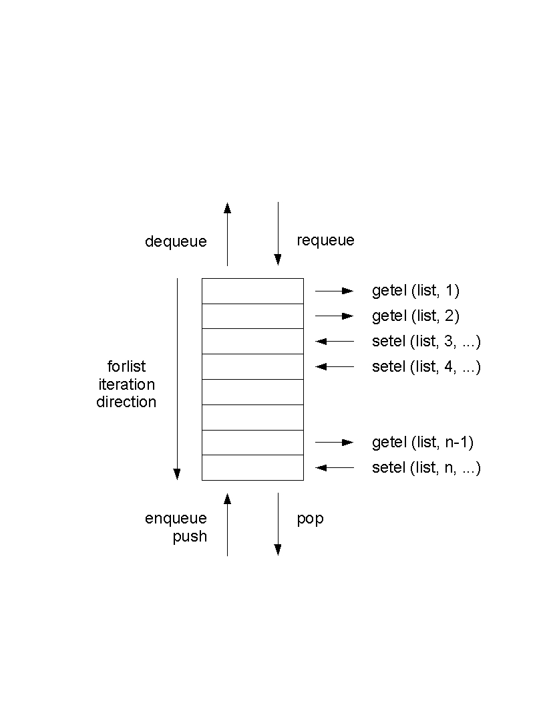

The LifeLines programming subsystem lets you produce reports in any style or layout. You may generate files in troff, Postscript, TeX, SGML or any other ASCII-based format, for further text processing and printing. You access the report generator by choosing the r command from the main menu. You may also use the programming subsystem to create query and other processing programs that write their results directly upon the screen. For example, there is a LifeLines program that computes the relationship between any two persons in a database.
Each LifeLines program is written in the LifeLines programming language, and the programs are stored in normal files. When you direct LifeLines to run a program, it asks you for the name of the program file, asks you where you want the program's output written, and then runs the program.
For example, say you want LifeLines to generate an ahnentafel (ancestor) report for Tom Wetmore. Such a report would show Tom Wetmore, his parents, grandparents, great-grandparents, and so on. It would like like the following:
Example 1. Example of ahnentafel report
1. Thomas Trask WETMORE IV
b. 18 December 1949, New London, Connecticut
2. Thomas Trask WETMORE III
b. 15 October 1925, New London, Connecticut
3. Joan Marie HANCOCK
b. 6 June 1928, New London, Connecticut
4. Thomas Trask WETMORE Jr
b. 5 May 1896, New London, Connecticut
d. 8 November 1970, New London, Connecticut
5. Vivian Genevieve BROWN
b. 5 April 1896, Mondovi, Wisconsin
6. Richard James HANCOCK
b. 18 August 1904, New London, Connecticut
d. 24 December 1976, Waterford, Connecticut
7. Muriel Armstrong SMITH
b. 28 October 1905, New Haven, Connecticut
8. Thomas Trask WETMORE Sr
b. 13 March 1866, St. Mary's Bay, Nova Scotia
d. 17 February 1947, New London, Connecticut
9. Margaret Ellen KANEEN
b. 27 October 1859, Liverpool, England
d. 10 May 1900, New London, Connecticut
... lots more
Here is a LifeLines program that generates this report:
Example 2. Example of ahnentafel report script
/*
* @progname ahnentafel_tutorial.ll
* @version 1.0
* @author Wetmore
* @category sample
* @output text
* @description
*
* Generate an ahnentafel chart for the selected person (tutorial sample).
*/
proc main ()
{
getindi(indi)
list(ilist)
list(alist)
enqueue(ilist, indi) /* list of people needing to be displayed */
enqueue(alist, 1) /* ancestor numbers for people on ilist */
/*
Our basic loop is we take the next person who needs to be displayed,
display them, and then record their parents as needing to be displayed.
*/
while (indi, dequeue(ilist)) {
/* display person we just pulled off list */
set(ahnen, dequeue(alist))
d(ahnen) ". " name(indi) nl()
if (e, birth(indi)) { " b. " long(e) nl() }
if (e, death(indi)) { " d. " long(e) nl() }
/* add person's parents to list to display */
if (par, father(indi)) {
enqueue(ilist, par)
enqueue(alist, mul(2,ahnen))
}
if (par,mother(indi)) {
enqueue(ilist, par)
enqueue(alist, add(1,mul(2,ahnen)))
}
}
}
|
Say this program is in the file ahnentafel_tutorial. When you choose the r option from the main menu, LifeLines asks:
What is the name of the report program? enter string: |
You enter ahnentafel_tutorial. Since the program generates a report, LifeLines asks where to write that report:
What is the name of the output file? enter file name: |
You enter a file name, say my.ahnen. LifeLines reads the program ahnen, executes the program, and writes the report output to my.ahnen. LifeLines reports any syntax or run-time errors found while trying to run the program.
A LifeLines program is made up of procedures and functions; every program must contain at least one procedure named main. The main procedure runs first; it may call other procedures, functions and built-in functions. In the ahnentafel example there is only one procedure.
In the example program, there are some comments at the top, to tell the reader a bit about the program. The comments run from /* to */, and are not necessary (but are suggested).
A procedure body is a sequence of statements. In the example program, the first five statements are:
getindi(indi) list(ilist) list(alist) enqueue(ilist, indi) enqueue(alist, 1) |
The first statement calls the getindi (get individual) built-in function, which causes LifeLines to ask you to identify a person using the zip browse style of identification:
Identify person for interpreted report enter name: |
After you identify a person, he or she is assigned to the variable indi. The next two statements declare two list variables, ilist and alist. Lists hold sequences of things; there are operations for placing things on lists, taking things off, and iterating through the list elements. In the example, ilist holds a list of ancestors, in ahnentafel order, who have not yet been reported on, and alist holds their respective ahnentafel numbers.
The next two statements call the enqueue function, adding the first members to both lists. The person identified by the getindi function is made the first member of ilist, and the number one, this person's ahnentafel number, is made the first member of alist.
The rest of the program is:
while (indi, dequeue(ilist)) {
set(ahnen, dequeue(alist))
d(ahnen) ". " name(indi) nl()
if (e, birth(indi)) { " b. " long(e) nl() }
if (e, death(indi)) { " d. " long(e) nl() }
if (par, father(indi)) {
enqueue(ilist, par)
enqueue(alist, mul(2,ahnen))
}
if (par, mother(indi)) {
enqueue(ilist, par)
enqueue(alist, add(1,mul(2,ahnen)))
}
}
|
This is a loop that iteratively removes persons and their ahnentafel numbers from the two lists, and then prints their names and birth and death information. If the persons have parents in the database, their parents and their parents' ahnentafel numbers are then put at the ends of the lists. The loop iterates until the list is empty.
The loop is a while loop statement. The line:
while (indi, dequeue(ilist)) {
|
The statement:
set(ahnen, dequeue(alist)) |
The line:
d(ahnen) ". " name(indi) nl() |
The next two lines:
if (e, birth(indi)) { " b. " long(e) nl() }
if (e, death(indi)) { " d. " long(e) nl() }
|
Finally in the program is:
if (par, father(indi)) {
enqueue(ilist,par)
enqueue(alist,mul(2,ahnen))
}
if (par,mother(indi)) {
enqueue(ilist,par)
enqueue(alist,add(1,mul(2,ahnen)))
} |
These lines add the father and mother of the current person, if either or both are in the database, to ilist. They also compute and add the parents' ahnentafel numbers to alist. A father's ahnentafel number is twice that of his child. A mother's ahnentafel number is twice that of her child plus one. These values are computed with the mul and add functions.
The following is a good template to use when creating a new report from scratch.
/*
* @progname reportname
* @version Version Number.
* @author report author and possible email address
* @category ????
* @output Format of Report Output
* @description The following paragraph is used to populate index.html.
*
* This report .... (Note, the text in the 1st paragraph following the @keyword
* lines is used as a description in the automatically generated index.html
* file. The text following the @description is not used for this purpose.)
* The description lines can be written with or without the *'s on the left
* they will be removed when generating index.html.
*
* Additional descriptive text
*/
proc main()
{
}
|
As mentioned earlier, reports may be invoked interactively from the main menu via the r option from the main menu.
Alternatively, llines may be called with the -x option to have it immediately run a report. For example, to have lifelines run the example ahnentafel report above, on a database named wetmore, this command llines -x ahnentafel_tutorial wetmore would be used.
For more efficient operation from scripts, the lifelines distribution includes a smaller program llexec which includes all functionality of lifelines except the curses GUI. llexec is made specifically, therefore, for invocations such as llexec -x ahnentafel_tutorial wetmore
LifeLines programs are stored in files you edit with a screen editor. Programs are not edited from within the LifeLines program; edit them as you would any text file. The programs may be stored in any directories; they do not have to be kept in or associated with LifeLines databases. You may set the LLPROGRAMS shell variable to hold a list of directories that LifeLines will use to automatically search for programs when you request program execution.
A LifeLines program is made up of one or more procedures and functions. A procedure has format:
proc name(params) { statements } |
Name is the name of the procedure, params is an optional list of parameters separated by commas, and statements is a list of statements that make up the procedure body. Report generation begins with the first statement in the procedure named main. Procedures may call other procedures and functions. Procedures are called with the call statement described below.When a procedure is called, the statements making up its body are executed.
A function has format:
func name(params) { statements } |
Name, params and statements are defined as in procedures. Functions may call other procedures and functions. When a function is called the statements that make it up are executed. A function differs from a procedure by returning a value to the procedure or function that calls it. Values are returned by the return statement, described below. Recursive functions are allowed. A function is called by invoking it in an expression.
Function and procedure parameters are passed by value except for list, set and table types which are passed by reference. Redeclaration of a parameter instantiates a new variable of the stated or implied type. The previous instance continues to exist in the scope of the caller.
You may comment your LifeLines programs using the following notation:
/*...comment text including any characters except */... */ |
These comments may be inserted anywhere in the program file.
You should put in some report header comments, because they will provide useful text for your report when it is included in the report list seen by the user who uses the lifelines pick report menu function. Report header comments are some specific comments at the top of the report, with keywords preceded by @ signs. The following is an illustration of report header comments, with explanations inside them:
/* * @progname The name of the report without the extension. This shows in the pick report option. * @version Version Number of the report. This is stored here and not in the report name. * @author Name of the author of this report and email address if he/she desires. * @category ???? * @output Modifies Database | text | HTML | GEDCOM | RTF | XML | PostScript | etc. * @description The first paragraph after this is used to generate the description in the index.html. This report .... */ |
Comments begin with a /* and end with a */. Comments may appear on lines of their own or on lines that have program constructs. Comments may span many lines. Comments may not be nested.
There are a number of statement types. The simplest is an expression statement, an expression that is not part of any other statement or expression. Expressions are defined more fully below. An expression statement is evaluated, and if its value is non-null (non-zero), it is assumed to be a string, and written to the program output file. If its value is null, nothing is written to the output file. For example, the expression
name(indi) |
set(n, nspouses(indi)) |
The programming language includes if statements, while statements and procedure call statements, with the following formats:
if ([varb,] expr) { statements }
[ elsif ([varb], expr) { statements } ]*
[ else { statements } ]
|
while ([varb,] expr ) { statements } |
call name(args) |
Square brackets indicate optional parts of the statement syntax. An if statement is executed by first evaluating the conditional expression in the if clause. If non-zero, the statements in the if clause are evaluated, and the rest of the if statement, if any, is ignored. If the value is zero, and there is an elsif clause following, the conditional in the elsif clause is evaluated, and if non-zero, the statements in that clause are executed. Conditionals are evaluated until one of them is non-zero, or until there are no more. If no conditional is non-zero, and if the if statement ends with an else clause, the statements in the else clause are executed. There are two forms of conditional expressions. If the conditional is a single expression, it is simply evaluated. If the conditional is a variable followed by an expression, the expression is evaluated and its value is assigned to the variable.
Note that if treats null strings as false, but empty strings as true. This has the benefit that
if (birth(indi)) |
The while statement provides a looping mechanism. The conditional is evaluated, and if non-zero, the body of the loop is executed. After each iteration the expression is reevaluated; as long as it remains non-zero, the loop is repeated.
The call statement provides procedure calls. Name must match one of the procedures defined in the report program. Args is a list of argument expressions separated by commas. Recursion is allowed. When a call is executed, the values of its arguments are evaluated and used to initialize the procedure's parameters. The procedure is then executed. When the procedure completes, execution resumes with the first item after the call.
The following report language statements are commonly encountered only near the top of a report:
char_encoding(string) |
require(string) |
option(string) |
include(string) |
global(varb) |
The char_encoding statement specifies what character encoding scheme is used by the report, so that the report processor can correctly interpret bytes not in ASCII (e.g., accented letters). An example specifying a character encoding common in Western Europe:
char_encoding("ISO-8859-1")
|
The report language also includes the following statements, which mimic some common programming languages:
set(varb, expr) |
continue() |
break() |
return([expr]) |
The set statement is the assignment statement; the expression is evaluated, and its value is assigned to the variable. The continue statement jumps to the bottom of the current loop, but does not leave the loop. The break statement breaks out of the most closely nested loop. The return statement returns from the current procedure or function. Procedures have return statements without expressions; functions have return statements with expressions. None of these statements return a value, so none has a direct effect on program output.
There are four types of expressions: literals, numbers, variables and built-in or user defined function calls.
A literal is any string enclosed in double quotes; its value is itself. A number is any integer or floating point constant; its value is itself. A variable is a named location that can be assigned different values during program execution. The value of a variable is the last value assigned to it. Variables do not have fixed type; at different times in a program, the same variable may be assigned data of completely different types. An identifier followed by comma-separated list of expressions enclosed in parentheses, is either a call to a built-in function or a call to a user-defined function.
The LifeLines programming language provides an include feature. Using this feature one LifeLines program can refer to other LifeLines programs. This feature is provided by the include statement:
include(string) |
The only main procedure actually executed is the one in the report the user chose. main procedures in other reports which are included do not get run. This allows a module intended to be included in other programs to have a main procedure for test purposes. If multiple functions or procedures with the same name are included (other than the name main) a runtime error is generated and the program is not run.
There is a long list of built-in functions, and this list will continue to grow for some time. The first subsection below describes the value types used in LifeLines programs; these are the types of variables, function parameters and function return values. In the remaining sections the built-in functions are separated into logical categories and described.
union of all types
boolean (0 represents false; anything else represents true)
event; reference to substructure of nodes in a GEDCOM record (reference)
family; reference to a GEDCOM FAM record (reference)
floating point number (may be used anywhere an INT may be used)
person; reference to a GEDCOM INDI record (reference)
integer (on most systems a 32-bit signed value)
arbitrary length list of any values (reference)
GEDCOM node; reference to a line in a GEDCOM tree/record (reference)
union of all arithmetic types (INT and FLOAT)
a collection of persons each with a value (see person sets below).
text string
keyed look-up table (reference)
type with no values
In the summaries of built-in functions below, each function is shown with its argument types and its return type. The types are from the preceding list. Sometimes an argument to a built-in function must be a variable; when this is so its type is given as XXX_V, where XXX is one of the types above. The built-ins do not check the types of their arguments. Variables can hold values of any type, though at any one time they will hold values of only one type. Note that EVENT is a subtype of NODE, and BOOL is a subtype of INT. Built-ins with type VOID actually return null (zero) values.
Reference types (denoted above in parentheses) obey "pointer semantics", which is to say that assigning one to another variable results in both variables pointing at the same data (no copy is made). Therefore, if you pass a string to a function which changes the string, the caller does not see the change, because a string is not a reference type. On the other hand, if you pass a table to a function which alters the table, the caller does see the change, because a table is a reference type.
The report generator provides a number of iterator statements for looping through genealogical and other types of data. For example, the children statement iterates through the children of a family, the spouses statement iterates through the spouses of a person, and the families statement iterates through the families that a person is a spouse or parent in.
Usually the first argument to the iterator is an expression that evaluates to an individual or a family. The other arguments of the iterator are variable names that are set with values for each iteration. The last argument is often a variable name used as a counter. It starts with the value of one and is increased by one for each iteration of the loop. After completion of the iteration, these variables have the value null.
children(afam,indi,cnt) { commands } |
For the purpose of traversing all records in the database, the following iterators may be used:
| forindi | Iterate over all people |
| forfam | Iterate over all families |
| forsour | Iterate over all sources |
| foreven | Iterate over all events |
| forothr | Iterate over all other recoure types |
All the iterators are described in more detail later in the section where their definition occurs.
addition - two to 32 arguments
subtraction
multiplication - two to 32 arguments
division
modulus (remainder)
exponentiation
negation
convert int to float
convert float to int
increment variable by second argument (or by 1 if no second argument)
decrement variable by second argument (or by 1 if no second argument)
logical and - two to 32 arguments
logical or - two to 32 arguments
logical not
equality (not strings)
non-equality
less than
greater than
less than or equal
greater than or equal
Add, sub, mul and div do normal arithmetic of integer or floating values. If any operand is float, the result is float. Functions add and mul can have two to 32 arguments; the sum or product of the full set of arguments is computed. Functions sub and div have two arguments each; sub subtracts its second argument from its first, and div divides its first argument by its second. The mod function returns the remainder after dividing the first parameter by the second. If the second argument to div or mod is zero, these functions return 0 and generate a run time error. Exp performs integer exponentiation. Neg negates its argument. The functions float and int can be used to explicitly convert a value to float or int where needed.
Incr and decr increment by one and decrement by one, respectively, the value of a variable. The argument to both functions must be a variable. These functions take an optional second argument which is the amount to increment or decrement the variable by.
And and or do logical operations. Both functions take two to 32 arguments. All arguments are and'ed or or'ed together, respectively. The arguments are evaluated from left to right, but only up to the point where the final value of the function becomes known. Not does the logical not operation.
Eq, ne, lt, le, gt and ge evaluate the six ordering relationships between two integers.
compute sine of argument in degrees
compute cosine of argument in degrees
compute tangent of argument in degrees
compute inverse sine of argument
compute inverse cosine of argument
compute inverse tangent of argument
convert (degree, minute, second) to decimal degrees
convert decimal degrees to (degree, minute, second)
compute distance between two locations
The trigonometric functions specify angles using degrees. The functions deg2dms and dms2deg are provided to convert between (degree,minute,second) notation and decimal degree representations for angles.
spdist estimates the distance between two spherical coordinates. The arguments provided are, in order, first latitude, first longitude, second latitude, second longitude. The result is in kilometers.
default name of
many name forms of
surname of
given names of
trimmed name of
first birth event of
first death event of
first burial event of
first father of
first mother of
next (younger) sibling of
previous (older) sibling of
sex of
male predicate
female predicate
pronoun referring to
number of spouses of
number of families (as spouse/parent) of
first parents' family of
first title of
internal key of (works for any record type)
SOUNDEX code of
root GEDCOM node of
root GEDCOM node of
find person with key value
first person in database in key order
last person in database in key order
next person in database in key order
previous person in database in key order
spouses (INDI, INDI_V, FAM_V, INT_V) { commands } |
loop through all spouses of
families (INDI, FAM_V, INDI_V, INT_V) { commands } |
loop through all families (as spouse) of
forindi (INDI_V, INT_V) { commands } |
loop through all persons in database
mothers (INDI, INDI_V, FAM_V, INT_V) { commands } |
loop through all female parents of a person
fathers (INDI, INDI_V, FAM_V, INT_V) { commands } |
loop through all male parents of a person
Parents (INDI, FAM, INT_V) { commands } |
loop through all familes a person is a child of
These functions take a person as a parameter and return information about him or her.
Name returns the default name of a person; this is the name found on the first 1 NAME line in the person's record; the slashes are removed and the surname is made all capitals; name can take an optional second parameter - if it is true the function acts as described above; if false, the surname is kept exactly as it is in the record.
Fullname returns the name of a person in a variety of formats. If the second parameter is true the surname is shown in upper case; otherwise the surname is as in the record. If the third parameter is true the parts of the name are shown in the order as found in the record; otherwise the surname is given first, followed by a comma, followed by the other name parts. The fourth parameter specifies the maximum length field that can be used to show the name; various conversions occur if it is necessary to shorten the name to fit this length.
Surname returns the surname of the person, as found in the first 1 NAME line; the slashes are removed. Givens returns the given names of the person in the same order and format as found in the first 1 NAME line of the record. Trimname returns the default name of the person trimmed to the maximum character length given in the second variable.
Birth, death, and burial return the first birth, death, and burial event in the person's record, respectively. An event is a level 1 GEDCOM node. If there is no matching event these functions return null.
Father, mother, nextsib and prevsib return the father, mother, next younger sibling and next older sibling of the person, respectively. If the person has more than one father (mother) the father (mother) function returns the first one. These functions return null if there is no person in the role.
Sex returns the person's sex as the string M if the person is male, F if the person is female, or U if the sex of the person is not known. Male and female return true if the person is male or female, respectively, or false if not.
Pn generates pronouns, useful when generating English text; the second parameter selects the type of pronoun:
Nspouses returns the number of spouses the person has in the database, and nfamilies returns the number of families the person is a parent/spouse in; these two values are not necessarily the same. Parents returns the first family that the person is a child in.
Title returns the value of the first 1 TITL line in the record.
Key returns the key value of a person (or any record); if there is a second parameter and it is non-null, the leading I (or F or S or E or X) will be stripped. For example, if key(curindi) returns I23, then key(curindi,1) returns 23.
Soundex returns the Soundex code of the person.
Root and Inode return the root node of the person's GEDCOM node tree. Note that an INDI value is not a NODE value. If you want to process the nodes within a person node tree, you must first use the root or inode function to get the root of the person node tree. Root and inode are synonyms.
Indi returns the person whose key is passed as an argument; if no person has the key indi returns null. INDI keys are accepted either as Innn or @Innn@.
Firstindi, nextindi and previndi allow you to iterate through all persons in the database. Firstindi returns the first person in the database in key order. Nextindi returns the next person after the argument person in key order. Previndi returns the previous person before the argument person in key order.
Spouses is an iterator that loops through each spouse a person has. The first argument is a person. The second argument is a person variable that iterates through the first person's spouses. The third argument is a family variable that iterates through the families the person and each spouse are in. The fourth argument is an integer variable that counts the iterations. The spouses iterator skips any family that has no spouse, whereas the families iterator does not.
Families is an iterator that loops through the families a person was a spouse/parent in. The first argument is a person. The second argument is a family variable that iterates through the families the first person was a spouse/parent in. The third argument iterates through the spouses from the families; if there is no spouse in a particular family, the variable is set to null for that iteration. The fourth argument is an integer variable that counts the iterations.
Families and Spouses behave the same except for one situation. If the person is a spouse in a family that only has one spouse identified, that family does not show up with the spouses iterator, but it does show up with the families iterator. One caution, this situation causes the 3rd argument of the families iterator to be set to null. You must check for this.
Forindi is an iterator that loops through every person in the database in ascending key order. Its first parameter is a variable that iterates through the persons; its second parameter is an integer counter variable that counts the persons starting at one.
mothers is an iterator that loops through every female parent of the specified individual. Its first parameter is a person; its third parameter is a family variable that iterates through the familes that the person is a child in; its second parameter is a person variable that is the female parent associated with the family in the third parameter; The fourth parameter is a variable that counts the families returned starting at one.
Parents is an iterator that loops through every family that a person is a child in. Note: This iterator's name begins with a capital P. There is another function of the same name that begins with a lower case p. Its first parameter is a person; its second parameter is a family variable that iterates through the familes that the person is a child in; and the third parameter is a variable that counts the families returned starting at one.
Forindi is an iterator that loops through every person in the database in ascending key order. Its first parameter is a variable that iterates through the persons; its second parameter is an integer counter variable that counts the persons starting at one.
fathers and mothers are iterators that loop through each family the specified individual is in returns each father or mother found. If a non-traditional family is processed, there will be separate iterations for each father or mother found.
first marriage event of
first husband/father of
first wife/mother of
number of children in
first child of
last child of
internal key of (works for persons also)
root GEDCOM node of
root GEDCOM node of
find family from key
first family in database in key order
last family in database in key order
next family in database in key order
previous family in database in key order
children (FAM, INDI_V, INT_V) { commands } |
loop through children of family
spouses (FAM, INDI_V, INT_V) { commands } |
loop through all husbands and wives of a family
forfam (FAM_V, INT_V) { commands } |
loop through all families in database
These functions take a family as an argument and return information about it.
Marriage returns the first marriage event found in the family record, if any; it returns null if there is no marriage event.
Husband returns the first husband/father of the family, if any; and wife returns the first wife/mother of the family, if any. Each returns null if the requested person is not in the family.
Nchildren returns the number of children in the family.
Firstchild and lastchild return the first child and last child in a family, respectively.
Key was described in the section on person functions.
Root and fnode return the root node of a family GEDCOM node tree. Note that a FAM value is not a NODE value. If you want to process the nodes within a family node tree, you must first use root or fnode function to get the root of the family node tree. Root and fnode are synonyms.
Fam returns the family who's key is passed as an argument; if no family has the key fam returns null. Family keys are accepted either as Fnnn or @Fnnn@.
Firstfam, nextfam and prevfam allow you to iterate through all families in the database. Firstfam returns the first family in the database in key order. Nextfam returns the next family after the argument family in key order. Prevfam returns the previous family before the argument family in key order.
Children is an iterator that loops through the children in a family. Its first parameter is a family expression; its second parameter is a variable that iterates through each child; its third parameter is an integer counter variable that counts the children starting at one. These two variables may be used within the loop body.
spouses is an iterator that loops through all the husbands and wives of a family. Its first parameter is a family expression; its second parameter is a variable that iterates through each parent; its third parameter is an integer counter variable that counts the parents starting at one. These two variables may be used within the loop body.
Forfam is an iterator that loops through every family in the database in ascending key order. Its first parameter is a variable that iterates through the families; its second parameter is an integer counter variable that counts the families starting at one.
forsour (NODE_V, INT_V) { commands } |
loop through all sources in database
foreven (NODE_V, INT_V) { commands } |
loop through all EVEN nodes in database
forothr (NODE_V, INT_V) { commands } |
loop through all other (notes, etc.) nodes in database
forsour is an iterator that loops through all the Source nodes in the database. Its first argument is the SOUR record and its second parameter is an integer counter variable that counts the sources elements starting at one. foreven is an iterator that loops through all the Event nodes in the database. Its first argument is the EVEN record and its second parameter is an integer counter variable that counts the events elements starting at one. forothr is an iterator that loops through all the Other nodes in the database. Its first argument is the record (NOTE, etc.) and its second parameter is an integer counter variable that counts the nodes starting at one.
declare a list
clear a list
check if list is empty
length of list
enqueue element on list
dequeue and return element from list
requeue an element on list
push element on list
pop and return element from list
array element assignment
array element selection
is second argument in list.
sort list elements
reverse sort list elements
duplicate a list
forlist (LIST, ANY_V, INT_V) { commands } |
loop through all elements of list
LifeLines provides general purpose lists that can be accessed as queues, stacks or arrays. A list must be declared with the list function before it can be used. Redeclaring an existing variable with the list clears it and restores it to being an empty list. If the argument to list() is the name of a parameter to the current routine, the reference to the calling routines list is removed and a new list is created.
A list can have any number of elements. Empty returns true if the list has no elements and false otherwise. Length returns the length of the list. The only parameter to both is a list. The following diagram indicates how the various access functions for a list interact:

Enqueue, dequeue and requeue provide queue access to a list. Enqueue adds an element to the back of a queue, dequeue removes and returns the element from the front of a queue, and requeue adds an element to the front of a queue. The first parameter to all three is a list, and the second parameter to enqueue and requeue is the value to be added to the queue and can be any value.
Push and pop provide stack access to a list. Push pushes an element on the stack, and pop removes and returns the most recently pushed element from the stack. The first parameter to both is a list, and the second parameter to push is the value to be pushed on the stack and can be of any type.
Setel and getel provide array access to a list. Setel sets a value of an array element, and getel returns the value of an array element. The first parameter to both is a list; the second parameter to both is an integer index into the array; and the third parameter to setel is the value to assign to the array element and can be of any type. Array elements are indexed starting at one. Unassigned elements are assumed to be null (0). Arrays automatically grow in size to accommodate the largest index value that is used. Passing 0 references the last element at the other end from 1, and -1 the one before it, etc.
inlist compares the second argument with each element in the list. If it finds a match inlist returns true.
sort and rsort sort a list, using the elements of the second array to determine the new order. Both lists are reordered, so essentially both are sorted using the sort order of the second argument. (If only one argument is given, it is sorted on its own elements.) rsort sorts in order reverse of sort. The order that sort produces places the smallest element at position 1, and the largest element at the end of the list, such that dequeue will remove the smallest element.
dup creates a copy of a list. If b is a list, the function set(a,b) makes the variable a a reference to the list b. If you want to make a new list, you must use set(a,dup(b)).
Forlist is an iterator that loops through the element in a list. Its first parameter is a LIST expression; its second parameter is a variable that iterates through the list elements; and its third parameter is an integer counter variable that counts the list elements starting at one.
declare a table
insert entry in table
lookup and return entry from table
size of the table
check if table is empty
These functions provide general purpose, keyed tables. A table must be declared with the table function before it can be used.
Insert adds an object and its key to a table. Its first parameter is a table; the second parameter is the object's key; and the third parameter is the object itself. The key must be a string and the object can be any value. If there already is an object in the table with that key, the old object is replaced with the new.
Lookup retrieves an object from a table. Its first parameter is a table, and the second parameter is the object's key. The function returns the object with that key from the table; if there is no such object, null is returned. length returns the number of elements in the table.
cross reference index of
tag of
value of
parent node of
first child of
next sibling of
copy a node structure
level of a node
fornodes (NODE, NODE_V) { commands } |
loop through child nodes
fornotes (NODE, STRING_V) { commands } |
loop through notes on a node
traverse (NODE, NODE_V, INT_V) { commands } |
loop through all descendent nodes
These functions provide access to the components of a GEDCOM node. All take a GEDCOM node as their only parameter, and each returns a different value associated with the node.
Xref returns the cross reference index of the node, if any; tag returns the tag of the node; and value returns the value of the node, if any. If there is no cross reference, xref returns null; if there is no value, value returns null.
Parent returns the parent node of the node, if any; child returns the first child node of the node, if any; and sibling returns the next sibling node of the node, if any. Whenever there is no such related node, these functions return null. These three functions allow simple navigation through a GEDCOM node tree.
Savenode makes a copy of the node, and the substructure of nodes below the node, that is passed to it. Beware: the memory used to make the copy is never returned to the system.
The level function returns the level of the node.
Fornodes is an iterator that loops through the child nodes of a GEDCOM node. Its first argument is a node expression, and its second parameter is a variable that iterates through each direct child node of the first node.
Fornotes is an iterator that loops through the NOTE nodes of a GEDCOM node. Its first argument is a node expression, and its second parameter is a variable that returns the value of the NOTE. The value includes processed sub CONC and CONT records.
Traverse is an iterator providing a general method for traversing GEDCOM trees. Its first parameter is a node expression; its second parameter is a variable that iterates over every node under the first node in a top down, left to right manner; and its third parameter is a variable that is set to the level of the current node in the iteration.
date of, value of first DATE line
place of, value of first PLAC line
year or, 1st string of 3-4 digits in 1st DATE line
date and place, values of 1st DATE and PLAC lines
date and place of, abbreviated from
returns the `event' of the current date
creates an event with specified date and assigns to specified variable
set day format for stddate calls
set month format for stddate calls
set year format for stddate calls
set era format for stddate calls
set date format for stddate calls
set custom date format for stddate calls
date of, in current format
set complex date format
set custom complex date picture string
date of, in current complex format
day of week, in appropriate language
These functions extract information about the dates and places of events.
Date returns the value of the first DATE line in an event, a node in a GEDCOM record tree. Date finds the first DATE line one level deeper than the event node. Place returns the value of the first PLAC line in an event. Year returns the first three or four digit number in the value of the first DATE line in an event; this number is assumed to be the year of the event.
Long returns the verbatim values of the first DATE and PLAC lines in an event, concatenated together and separated by a comma. Short abbreviates information from the first DATE and PLAC lines, concatenates the shortened information together with a comma separator and returns it. An abbreviated date is its year; an abbreviated place is the last component in the value, further abbreviated if the component has an entry in the place abbreviation table.
Gettoday creates an event that has today's date in the DATE line. Setdate creates an event that has the specified date in the DATE line, and assigns the new event to the specified variable.
The next seven functions are used to format dates in a variety of ways. Dayformat, monthformat, yearformat, eraformat, and dateformat select style options for formatting the day, month, year, era, and overall date structure; stddate returns dates in the selected style. datepic allows specifying a custom pattern that overrides the date format selected with dateformat. The string supplied specifies the placement of the day, month and year in the string with %d, %m and %y. A null argument disables the overrided format. The argument to stddate is normally an event and the date is extracted from the event and formatted. If the argument is a date string it is converted using the current date formats.
The next three functions provide for more complex formatting of dates. Taking into account the abt, est, cal, bef, aft, fr and to qualifiers on GEDCOM dates. complexformat selects the format to use. The format effects only the complex picture, not the format of the date itself. The function complexpic can be used to specify a custom picture string for any or all of the 9 custom format strings. The custom string can be canceled by passing a null for the string. When a custom picture string is provided it overrides both the abbreviated and full word picture strings. complexdate formats the date similarly to stddate, but with the addition of the complex date format string selected.
The day format codes passed to dayformat are:
| 0 | leave space before single digit days |
| 1 | use leading 0 before single digit days |
| 2 | no space or leading 0 before single digit days |
The month format codes passed to monthformat are:
| 0 | number with space before single digit months |
| 1 | number with leading zero before single digit months |
| 2 | number with no space or zero before single digit months |
| 3 | upper case abbreviation (eg, JAN, FEB) (localized) |
| 4 | capitalized abbreviation (eg, Jan, Feb) (localized) |
| 5 | upper case full word (eg, JANUARY, FEBRUARY) (localized) |
| 6 | capitalized full word (eg, January, February) (localized) |
| 7 | lower case abbreviation (eg, jan, feb) (localized) |
| 8 | lower case full word (eg, january, february) (localized) |
| 9 | upper case abbreviation in English per GEDCOM (eg, JAN, FEB) |
| 10 | lower case roman letter (eg, i, ii) |
| 11 | upper case roman letter (eg, I, II) |
The year format codes passed to yearformat are:
| 0 | use leading spaces before years with less than four digits |
| 1 | use leading 0 before years with less than four digits |
| 2 | no space or leading 0 before years |
The era format codes passed to eraformat are:
| 0 | no AD/BC markers |
| 1 | trailing B.C. if appropriate |
| 2 | trailing A.D. or B.C. |
| 11 | trailing BC if appropriate |
| 12 | trailing AD or BC |
| 21 | trailing B.C.E. if appropriate |
| 22 | trailing C.E. or B.C.E. |
| 31 | trailing BC if appropriate |
| 32 | trailing CE or BCE |
The full date formats passed to stddate are:
| 0 | da mo yr |
| 1 | mo da, yr |
| 2 | mo/da/yr |
| 3 | da/mo/yr |
| 4 | mo-da-yr |
| 5 | da-mo-yr |
| 6 | modayr |
| 7 | damoyr |
| 8 | yr mo da |
| 9 | yr/mo/da |
| 10 | yr-mo-da |
| 11 | yrmoda |
| 12 | yr (year only, omitting all else) |
| 13 | da/mo yr |
| 14 | (As in GEDCOM) |
The complex date formats selected by the complexformat and used by complexdate are:
| Mode | Example | |
| 3 | use abbreviations in uppercase | ABT 1 JAN 2002 |
| 4 | use abbreviations in titlecase | Abt 1 JAN 2002 |
| 5 | use uppercased full words | ABOUT 1 JAN 2002 |
| 6 | use titlecased full words | About 1 JAN 2002 |
| 7 | use abbreviations in lowercase | abt 1 JAN 2002 |
| 8 | use lowercase full words | about 1 JAN 2002 |
The complex date string pictures that can be overridden with the complexpic are:
| Abbreviation | Full word | |
| 0 | abt %1 | about %1 |
| 1 | est %1 | estimated %1 |
| 2 | cal %1 | calculated %1 |
| 3 | bef %1 | before %1 |
| 4 | aft %1 | after %1 |
| 5 | bet %1 and %2 | between %1 and %2 |
| 6 | fr %1 | from %1 |
| 7 | to %1 | to %1 |
| 8 | fr %1 to %2 | from %1 to $2 |
The function dayofweek is a way to access the (localized) day name, eg, "Thursday", for a given date.
julian date number is number of days since origin (-4712/01/01 12h00 UT) of specified date
Convert julian date number to date (actually to event structure with subordinate date)
These functions allow adding or subtracting days from dates.
date2jd converts a date into a number of days, which can then be adjusted by simple arithmetic. Finally, jd2date converts the number of days back into a date.
Julian calendar is used before 4 OCT 1582, and Gregorian calendar afterwards.
As with other date functions, calendar escapes (eg, "@#DRENCH R#@") are not respected, and the only the first date of the DATE record is used.
extract a date
extract a name
extract a place
extract tokens
extract date from string
Value extraction functions read the values of certain lines and return those values in extracted form.
Extractdate extracts date values from either an event node or DATE node. The first parameter must be a node; if its tag is DATE, the date is extracted from the value of that node; if its tag is not DATE, the date is extracted from the first DATE line one level below the argument node. The remaining three arguments are variables. The first is assigned the integer value of the extracted day; the second is assigned the integer value of the extracted month; and the third is assigned the integer value of the extracted year.
Extractnames extracts name components from a NAME line. Its first argument is either an INDI or a NAME node. If it is a NAME line, the components are extracted from the value of that node; if it is an INDI line, the components are extracted from the value of the first NAME line in the person record. The second argument is a list that will hold the extracted components. The third argument is an integer variable that is set to the number of extracted components. The fourth argument is a variable that is set to the index (starting at one) of the surname component; the / characters are removed from around the surname component. If there is no surname this argument variable is set to zero.
Extractplaces extracts place components from a PLAC node. The first argument is a node; if its tag is PLAC, the places are extracted from the value of the node; if its tag is not PLAC, places are extracted from the first PLAC line one level below the argument node. The second parameter is a list that will hold the extracted components. The third argument is an integer variable that is set to the number of extracted components. Place components are defined by the comma-separated portions of the PLAC value; leading and trailing white space is removed from the components, while all internal white space is retained.
Extracttokens extracts tokens from a string and places them in a list. The first argument is the string to extract tokens from. The second argument is the list to hold the tokens. The third argument is an integer variable that is set to the number of tokens extracted. The fourth parameter is the string of delimiter characters that extracttokens uses to break the input string into tokens.
extractdatestr extracts date values from a . STRING. It is intended for internal verification of date extraction code. The remaining five arguments are variables. The second is assigned the integer value of the extracted day; the third is assigned the integer value of the extracted month; and the fourth is assigned the integer value of the extracted year.
identify person through user interface
identify set of persons through user interface
identify family through user interface
get integer through user interface
get string through user interface
select child of person/family through user interface
select family person is in as spouse
select person from set of persons
select spouse of person
select a subset of persons from set of persons
select from a list of options
These functions interact with the user to get information needed by the program.
Getindi asks the user to identify a person. The first argument is a variable that is set to the person. The second is an optional string to use as a prompt. Getindiset asks the user to identify a set of persons. Getfam asks the user identify a family. Getint and getstr ask the user enter an integer and string, respectively.
Choosechild asks the user select a child of a family or person; its single argument is a person or family; it return the child. Choosefam has the user select a family that a person is in as a spouse; its argument is a person; it returns the family. Chooseindi has the user select one person from a set of persons; its argument in a set of persons; it returns the chosen person. Choosespouse has the user select a spouse of a person; its argument is a person; it returns the chosen spouse. Choosesubset has the user select a subset of persons from a set of persons; its argument is the chosen subset.
Menuchoose allows the user to select from an arbitrary menu. The first argument is a list of strings making up the items in the menu; the second, optional argument is a prompt string for the menu; menuchoose returns the integer index of the item selected by the user; if the user doesn't select an item, zero is returned.
convert to lower case
convert to upper case
capitalize first letter
capitalize first letter of each word
trim to length
right justify in field
catenate two strings
catenate two strings
number of characters in string
substring function
index function
number as decimal string
number as floating point string
number in cardinal form (one, two, ...)
number in ordinal form (first, second, ...)
convert number to Latin letter (a, b, ...)
number in Roman numeral form (i, ii, ...)
find SOUNDEX value of arbitrary string
convert numeric string to integer
convert numeric string to integer
general string compare
compare strings for equality
compare strings for inequality
These functions provide string handling. Prior to version 3.0.6, many of them used an approach to memory management chosen for absolute minimal memory footprint. A function using this approach constructed its output string in its own string buffer, reusing that buffer each time it was called. When a function using this approach returned a string value it returned its buffer. In consequence the strings returned by these functions were to be either used or saved before the function was called again.
Lower and upper convert the letters in their arguments to lower or upper case, respectively. Capitalize converts the first character of the argument, if it is a letter, to upper case. Lower and upper historically used the buffer return method; capitalize operates on and returns its argument. titlecase converts the first letter of each word if it is a letter, to upper case and all other characters to lower case.
Trim shortens a string to the length specified by the second parameter. If the string is already of that length or shorter the string is not changed. Rjustify right justifies a string into another string of the length specified by the second parameter. If the original string is shorter than the justified string, blanks are inserted to the left of the original string; if the string is longer than the justified string, the original string is truncated on the right. Trim historically used the buffer return method; rjustify creates and returns a new string.
Concat and strconcat catenate strings and return the result. They are identical functions. They may take two to 32 string arguments; null arguments are allowed. The arguments are concatenated together into a single, newly allocated string, which is returned.
Strlen returns the length of the string argument.
Substring returns a substring of the first argument string. The second and third arguments are the indices of the first and last characters in the argument string to use to form the substring. The indexes are relative one. Substring historically used the buffer return method.
Index returns the character index of the nth occurrence of a substring within a string. The index is the relative one character offset to the beginning of the substring. The first argument is the string; the second argument is the substring; and the third argument is the occurrence number.
D, card, ord, alpha and roman convert integers to strings. D converts an integer to a numeric string; card converts an integer to a cardinal number string (eg, one, two, three); ord converts an integer to an ordinal number (eg, first, second, third); alpha converts an integer to a letter (eg, a, b, c); and roman converts an integer to a Roman numeral (eg, i, ii, iii).
The f function converts a float to a string. The optional second argument specifies the precision of the output. The default precision is 2.
Strsoundex converts an arbitrary string to a SOUNDEX value. Non-ASCII text characters are ignored in the string.
Strtoint converts a numeric string to an integer. Atoi is identical to strtoint.
Strcmp compares two strings and returns an integer that is less than zero, equal to zero, or greater than zero, if, respectively, the first string is lexicographically less than, equal to, or greater than the second string. Eqstr and nestr return whether two strings are equal or not equal, respectively. Strcmp, Eqstr, and nestr all treat null strings as empty strings, which is to say they pretend that a null string is actually "". This means that all null and empty strings compare as equal.
use line output mode
use page output mode with given page size
position to column in output
get current column in output
position to row in output
position to (row, col) coordinate in output
output page buffer
newline character
space character
double quote character
send program output to this file
return name of current program output file
copy file contents to program output file
tests for characteristics of a file
print string to standard output window
Reports can be generated in two modes, line mode and page mode. Linemode selects line mode and pagemode selects page mode; line mode is the default. The first parameter to pagemode is the number of rows per page; the second parameter is the number of columns per page. When in the line mode report output is written directly to the output file as the program runs, line by line. When in page mode output is buffered into pages which are written to the output file when pageout is called. Page mode is useful for generating charts (eg, pedigree charts or box charts) where it is convenient to compute the two-dimensional location of output.
Col positions output to the given column. If the current column is greater than the argument, col positions output to the given column on the next line. Col works in both modes. Getcol returns the current column in the output.
Row positions output to the first character in the given row; row can only be used in page mode.
Pos positions output to a specified row and column coordinate; the first argument specifies the row, and the second specifies the column. Pos can only be used in page mode.
Nl write a new line character to the output file; sp writes a space character to the output file; and qt writes a quote character to the output file. Note that \n and \' can be used within string values to represent the newline and double quote characters.
Newfile specifies the name of the report output file. Its first argument is the file's name; its second argument is an append flag - if its value is non-zero the report appends to this file; if its value is zero the report overwrites the contents of the file. Newfile can be called many times; this allows a single report program to generate many report output files during one execution. Programs are not required to use newfile; if it is not used then LifeLines automatically asks for the name of the report output file.
Outfile returns the name of the current report output file.
Copyfile copies the contents of a file to the report output file; its argument is a string whose value is the name of a file; if the file name is not absolute nor relative, then the LLPROGRAMS environment variable, if set, will be used to search for the file; the file is opened and its contents copied to the report output file.
Test will check for a specified property of the specified file. The first argument is the property, the second argument is the filename. Supported properties are: r - file is readable w - file is writeable x - file is executable s - file has non-zero size z - file has zero size e - file exists f - check if argument is a file d - check if argument is a directory The return value is TRUE or FALSE, depending on whether the file had the specified property or not.
Print prints its argument string to the standard output window; print may have one to 32 arguments.
declare a set variable
add a person to a set
remove a person from a set
size of a set
union of two sets
intersection of two sets
difference of two sets
set of all parents
set of all children
set of all spouses
set of all siblings
set of all ancestors
set of all descendents
same as descendentset; spelling
remove duplicates from set
sort indiset by name
sort indiset by key values
sort indiset by auxiliary values
generate indiset from GEDCOM name string
true if the Individual is in the set.
forindiset( SET, INDI_V, ANY_V, INT_V ) { commands } |
loop through all persons in person set
These functions allow you to manipulate person sets. A person set is a potentially large set of persons; each person may have an arbitrary value associated with him/her. A person set must be declared with the indiset function before it can be used.
Addtoset adds a person to a set. The first argument is the set; the second argument is the person; and the third argument may be any value. The same person may be added to a set more than once, each time with a different value. Deletefromset removes a person from a set. The first argument is the set; the second argument is the person; if the third parameter is true all of the person's entries are removed from the set; if false only the first entry is removed. Length returns the number of persons in a person set.
Union, intersect and difference return the set union, set intersection and set difference, respectively, of two person sets. Each functions takes two person sets as arguments and returns a third person set. The functions actually modify their argument sets, both reordering them into canonical key order and removing any duplicates (these operations are necessary to easily implement these types of set functions).
Parentset, childset, spouseset and siblingset return the set of all parents, set of all children, set of all spouses and set of all siblings, respectively, of the set of persons in their argument. In all cases there is no change to the argument person set.
Ancestorset returns the set all ancestors of all persons in the argument set. Descendentset returns the set of all descendents of all persons in the argument set. Descendantset is the same as descendentset; it allows an alternate spelling.
Uniqueset sorts a person set by key value and then removes all entries with duplicate keys; the input set is modified and returned.
Namesort, keysort and valuesort sort a set of persons by name, by key and by associated value, respectively.
Each person in a person set has an associated value. When a person is added to a set with addtoset, the value is explicitly assigned. When new sets are created by other functions, a number of rules are used to associate values with persons as they are added to the new sets. For parentset, childset and spouseset the values are copied from the first input set person that causes the new person to be added to the set. For union, intersect and difference, the values are copied from the values in the first input set, except in the case of union, when persons are taken from the second set alone, in which case the values come from there. For ancestorset and descendantset the value is set to the number of generations the new person is away from the first person in the input set that the new person is related to. If the new person is related to more than one person in the input set, the value is set for the nearest relationship; that is, the value is as low as possible. Valuesort sorts a person set by the values of these auxiliary values.
Genindiset generates the set of persons that matches a string whose value is a name in GEDCOM format. Genindiset uses the same algorithm that matches names entered at the browse prompt or by the user interaction getindiset function.
Inset returns true if the the specified individual is in the SET.
Forindiset is an iterator that loops through each person in an indiset. The first parameter is an indiset. The second parameter is a variable that iterates through each person in the set. The third parameter iterates through the values associated with the persons. The fourth parameter is an integer variable that counts the iterations.
create a GEDCOM node
add a node to a GEDCOM tree
delete a node from a GEDCOM tree
write a person back to the database
write a family back to the database
These functions allow you to modify an internal GEDCOM node tree.
Createnode creates a GEDCOM node; the two arguments are tag and value strings, respectively; the value string can be null. Addnode adds a node to a node tree. The first argument is the new node; the second is the node in the tree that becomes the parent of the new node; the third is the node in the tree that becomes the previous sibling of the new node; this argument is null if the new node is to become the first child of the parent. Detachnode removes a node from a node tree. writeindi writes an individual record back to the database, and writefam writes a family record back to the database, allowing the report to make permanent changes to the database.
The node functions only change data in memory; there is no effect on the database until and unless writeindi or writefam are called.
determine if string is a cross reference
reference cross reference or key to node tree
These functions allow you to recognize values that are cross references and to read the records they refer to. Reference returns true if its string argument is a cross reference value, that is, the internal key of one of the records in the database. Dereference returns the node tree of the record referred to by its cross-reference string argument.
lock a record (or record containing specified node) in memory
unlock a record (or record containing specified node) from memory
return name of current database
return name of current program
return version of LifeLines program
execute string as a UNIX shell command
amount of heap used for windows
extract system or user property. Function available after v3.0.5.
set the locale
encode a string in a codeset
convert string from one codeset to another
set interperter debug mode
dump information about a pvalue
free space associated with a variable
Lock and unlock are used to lock a person or family into RAM memory, and to unlock a person or family from RAM memory, respectively.
Database returns the name of the current database, useful in titling reports. program returns the name of the current report program. Version returns the version of the running LifeLines program, eg, 3.0.61.
System executes its string argument as a UNIX (or MS-Windows as appropriate) shell command, by invoking the system shell. This will not occur if the user has chosen to disallow report system calls (via the DenySystemCalls user option).
The heapused function returns the amount of system heap that is in use at the time. This is implemented only on windows.
The getproperty function extracts system or user properties. Properties are named group.subgroup.property, group.property or even property. The keys are available at the moment can be found in the ll-userguide under System and User Properties.
The setlocale function sets the locale and returns the previous setting of locale.
The bytecode function converts the supplied string with escape codes to the current codeset from the internal codeset or from the codeset specified by the optional second parameter if specified. A escaped code is a dollar sign ($) followed by 2 hex characters, e.g. $C1.
The convertcode function converts a string to another codeset. In the two argument form, the second argument is the destination codeset, and the source codeset is the internal codeset. In the 3 argument form, the second argument is the source codeset and the third argument is the destination codeset. (See the section of the LifeLines User Guide on codeset conversions.) For example, if your internal codeset is UTF-8, and the report codeset is UTF-8, the following code,
"<p>\n"
convertcode(str,"UTF-8//html")
|
The debug function turns on or off programming debugging. When enabled gobs of information is printed as a LifeLines program is run. This can be useful to figure out why a program is not behaving as expected.
The pvalue function returns a string that represents the contents of a variable in the interpreter. This is present for debug purposes.
The function free deallocates space associated with the variable provided as argument 1. Care must be taken when free is used in a function on a variable which is a parameter to the function. free will not effect the variable in the calling program.
The baptism finds christening (CHR) events. The types of events desired to be found, depend on the nature of the report being written. It is recommended that custom access routines be used instead of baptism.
first baptism event of
If you want a routine that returns the first event for an individual that is a baptism, LDS baptism, Christening or Adult Christening, the following routine can be used.
func get_baptism(indi) {
fornodes(indi,node) {
if (index(" BAPM BAPL CHR CHRA ",upper(tag(node)),1)) {
return(node)
}
}
return(0)
} |
/* get_baptism(indi) returns a baptism event if found
events CHR, BAPM, BAPL, and CHRA are considered, in that order
*/
func get_baptism(indi, prefs)
{
set(chr, 0)
set(bapm, 0)
set(bapl, 0)
set(chra, 0)
fornodes(indi,node)
{
if (and(eq(upper(tag(node)), "CHR"), not(chr)) { set(chr, node) }
if (and(eq(upper(tag(node)), "BAPM"), not(bapm)) { set(bapm, node) }
if (and(eq(upper(tag(node)), "BAPL"), not(bapl)) { set(bapl, node) }
if (and(eq(upper(tag(node)), "CHRA"), not(chra)) { set(chra, node) }
}
if (chr) { return(chr) }
if (bapm) { return(bapm) }
if (bapl) { return(bapl) }
return(chra)
} |
The functionality of the following three functions, getindimsg, getintmsg and getstrmsg is now available using the optional parameter of getindi, getint and getstr. These functions should no longer be used as they will be removed from a future version of Lifelines.
identify person through user interface
get integer through user interface
get string through user interface
Three functions are available for to generate GEDCOM format output to the report output file of all persons in the argument person set. These functions do not in most cases generate consistent and usable output. This can be done with a program, but it is suggested that these routines are probably not what you really wanted.
Gengedcom output contains a person record for each person in the set, and all the family records that link at least two of the persons in the set together. This function is provided for backward compatibility. Source, Event and Other(X) record pointers are output unmodified, but none of their records are output - this yields an inconsistent output.
Gengedcomweak output does not contain Source, Event or Other(X) record pointers or their records. Gengedcomstrong includes the Source, Event and Other(X) record pointers and all top-level nodes referenced by them.
generate GEDCOM file from person set
generate GEDCOM file from person set
generate GEDCOM file from person set
By the release of version 3.0.6, all string values are local copies, and the save and strsave functions should be entirely unnecessary. Save is present only for compatibility reasons. Previously it duplicated its argument (to prevent strings from becoming stale; this is not currently necessary (and this function no longer does anything). Strsave is the same function as save.
Use detachnode instead of deletenode.
In releases after version 3.0.39, the length function accepts an argument of type list, set or table. the lengthset function is no longer needed.